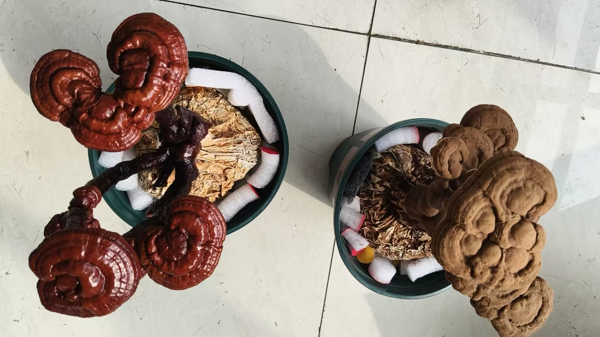
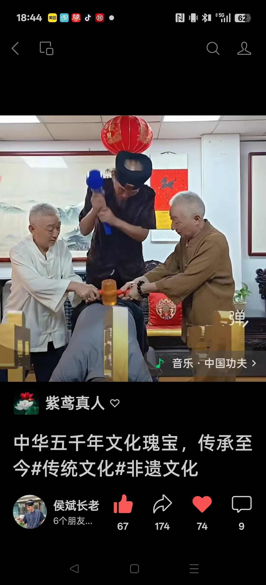

20260927坚持用心学一样 别见一个学一个
原始对话记录坚持用心学一样
别见一个学一个

侯道长发来照片，武力治疗腰椎间盘突出

我给了他一个大大的赞
还要两个人扶锤
老道长瞄准
不简单啊
[呲牙][呲牙][呲牙][呲牙]
突出，就砸成不突出吗？
[憨笑][憨笑][憨笑]
当然不能砸
咱们有最好的办法
不过，这老头跟我还挺不错
自己不喝酒，也倒上一滴跟我喝，喝几滴脸就通红
以下为编者整理的主题文章
编者整理 · 主题文章
坚持学一样：别"见一个学一个"
一句话结论：本页以"坚持用心学一样，别见一个学一个"点题，配一则老道长"武力"调理腰突的现场调侃；归到学修的态度——与其样样浅尝，不如一门深入。健康内容仅作传统记录转述，不构成医疗建议。
一、本页是什么
本页标题只有两句大白话："坚持用心学一样，别见一个学一个。" 正文则配了一则见闻：侯道长发来照片，说在用"武力"调理腰椎间盘突出，"还要两个人扶锤，老道长瞄准"，编者"给了他一个大大的赞"，随后又打趣"突出，就砸成不突出吗"，并补一句"当然不能砸，咱们有最好的办法"。末尾还记了两人交情：这老头自己不喝酒，也倒上一滴陪他喝，几滴就脸红。
二、"见一个学一个"的代价
本页把"见一个学一个"当成反面来点。它的成本其实很实在：
| 学法 | 表面 | 实际 |
|---|---|---|
| 见一个学一个 | 热闹、什么都懂一点 | 每门都停在门口，攒不成东西 |
| 一门深入 | 枯燥、见效慢 | 功夫能长在身上，越练越顺 |
对应的就是标题里的"坚持用心"——"坚持"管时间，"用心"管质量，缺一不可。
三、怎么算"用心学一样"
- 选定一门：不追热点，先定下来；
- 给够时间：参见《每天早起》，有一段固定、不被打扰的时段；
- 允许慢：参见《只要勤修，别追求法术》——不图快、不贪奇；
- 常回看：把学过的反复练，而非不断换新的。
四、一则"治腰"调侃
本页那段"武力治疗腰椎间盘突出"的现场，是以调侃口吻记下的——"当然不能砸"。它更像同行间的玩笑与合影留念，而不是一份方法介绍。
提醒：腰椎间盘突出等属医疗问题，请及时到正规医院就诊，听专业医生的方案。本篇对原文只作中性转述，不提供任何医疗建议，也不引导照做。
五、常见问题
问：为什么"别见一个学一个"这么重要？ 因为学任何手艺都要熬过平台期。频繁换门，等于每逢难处就重头再来。
问：那"多学几样"不行吗？ 先把一门的底子打牢，再谈旁通不迟。本页反对的是"门门蜻蜓点水"，不是反对拓宽视野。
问：那个"治腰"的法子能学吗？ 不能当方法看待。它是私下调侃，且涉及医疗风险，请勿模仿，有问题请就医。
六、提醒
- 本页主旨：一门深入，坚持用心；
- "治腰"内容属调侃转述，非方法、勿模仿；
- 涉及健康与疾病，请到正规医院就诊。
说明与免责：本站为民间修炼、民俗文化与传统文化资料的整理与记录，内容源自传承者口传与个人修习体会，仅供文化交流与研究参考，不构成医疗、健康、投资或任何功效承诺。所述内容属传统术数范畴，请理性看待；如身体不适，请及时就医。请遵守法律法规与公序良俗。